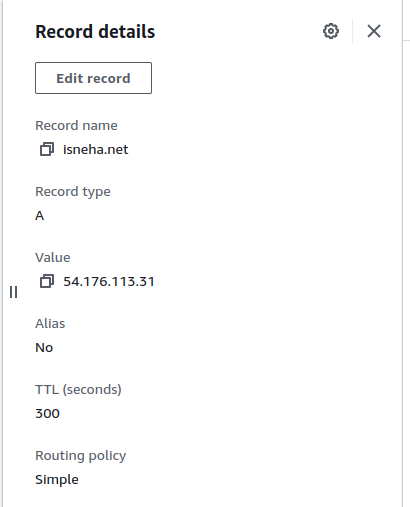
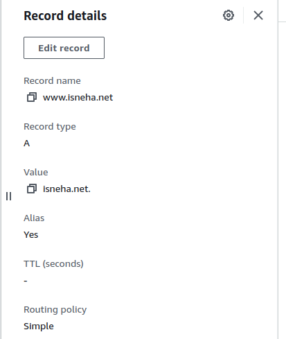
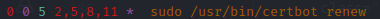

I created this website to document and showcase my journey as a network engineer. The idea for this site struck me after a rather embarrassing moment when one of my friends asked about a project I did four years back, and I blanked out on the technical details because I hadn’t documented any of it! Talk about a brain freeze. Determined not to face that again, I started documenting everything on my iPad. Then it hit me—why not put it up on my website for me and readers like you?
Frontend
When it came to building my website, I chose Flask as my web framework. Flask is lightweight and flexible, making it an excellent choice for creating a personal website. One of the key features of Flask is its use of Jinja2 templating, which allows for dynamic HTML generation. This made it easy for me to create reusable templates and manage the layout of my web pages efficiently.
For the frontend design, I turned to Bootstrap. I’ll be honest, I'm not a design expert. But Bootstrap's responsive design framework let me whip up a sleek and modern interface that looks great on any device. With its vast library of pre-designed components and utilities, styling the website became a breeze and saved me tons of time!
Backend
To handle the backend of my website, I chose a combination of Flask, Gunicorn, and Nginx.
I used Flask to manage routing for my HTML pages. Flask is a lightweight and flexible web framework that makes it easy to set up routes and handle requests. However, Flask by itself isn't optimized for handling multiple concurrent sessions efficiently.
Enter Gunicorn. To address Flask's limitation in handling concurrent sessions, I integrated Gunicorn as my WSGI HTTP server. Gunicorn spins up multiple workers, enabling multi-threading and allowing the application to handle multiple requests simultaneously. This setup ensures that my website remains responsive and can serve multiple users at once.
Finally, I used Nginx as a reverse proxy server. Nginx sits in front of Gunicorn and handles incoming requests, distributing them to the Gunicorn workers. It also provides load balancing and can serve static files directly, improving the overall performance and scalability of the website.
To get this dynamic trio working together, I deployed my HTML and Python configuration files on an AWS EC2 instance and fired up the Nginx service. Boom! My website was live. I bought my domain, isneha.net, through Route 53 and set up DNS routing.
For SSL, I used a third-party tool called Let’s Encrypt, which provides free SSL certificates. To ensure the certificate remains valid, I have a cron job running on the EC2 instance that renews the certificate every 90 days.
Additionally, I maintain a Git repository for my website's code. I have a script that regularly checks for changes in the GitHub remote repository. If any changes are detected, the script pulls the latest configuration and restarts the website's service. This way, my site is always rocking the latest code without me lifting a finger. I will talk about this in detail in the upcoming sections.
Alright! We have the architecture and the background. Let's talk code now!
This section of my Flask application sets up the routing for different pages on my website. I use two dictionaries, route_data and project_routes, to map URL paths to their respective HTML templates and the arguments needed for rendering those templates.
The route_data dictionary contains the main routes of my website. Each key represents a URL path (e.g., "/", "/resume", "/python"), and each value is a dictionary with two keys: template and args. The template key specifies which HTML file to render, while the args key provides a dictionary of additional arguments to pass to the template. For example, the root path "/" renders the "index.html" template and includes routes to various project sections like resume, Python projects, Linux projects, networking projects, and a specific Python website project.
Similarly, the project_routes dictionary handles specific project pages, mapping URL paths directly to their respective HTML templates. Each entry here is a straightforward mapping, such as the path "/python/linkedin-job-scraper" rendering the "linkedin-job-scraper.html" template.
By organizing the routes in this way, I can manage and update my website's structure more efficiently, keeping my code clean and maintainable.
The render_custom_template function is a helper function designed to streamline the process of rendering templates based on the route_data dictionary. It takes a route as an argument, retrieves the corresponding template and arguments from the route_data dictionary, and then uses Flask’s render_template function to render the HTML page with the appropriate arguments.
This loop iterates over each key (which represents a route) in the route_data dictionary. For each route, it uses the app.add_url_rule method to add a new URL rule to the Flask application. This method requires three arguments:
route: The URL path (e.g., "/resume").
endpoint: The endpoint name, which is the same as the route in this case.
view_func: The view function that will handle requests to this URL.
The lambda function ensures that the correct route is passed to the render_custom_template
function. This setup allows Flask to dynamically create routes based on the entries in the route_data dictionary, making the code more maintainable and scalable.
This loop works similarly but is specific to the project_routes dictionary. For each route-template pair in project_routes, it calls app.add_url_rule to map the route to its corresponding template. The lambda function directly calls render_template with the specified template and a common set of arguments. This approach makes it easy to add new project-specific pages without duplicating code.
Finally, this block of code ensures that the Flask application runs in debug mode on the local server (127.0.0.1) at port 80. To keep my website running 24/7, I created a systemd service and enabled it on my EC2 instance. I'll go into more detail about setting up this service in the next section.
First things first, I set up my AWS account using the free tier and bought the domain isneha.net through AWS Route 53. I chose AWS because it's reliable, scalable, and has a ton of services that can grow with my needs.
Next, I spun up an AWS EC2 instance using the t2.micro type, which is free for up to 750 hours per month. This instance provides 1 CPU and 1 GB of RAM, which is more than sufficient for hosting my personal website. I configured the instance to allow SSH, HTTP, and HTTPS traffic.
Gunicorn
To set up my Flask application on the EC2 instance, I first needed to install Flask and Gunicorn. After SSHing into the instance, I set up a virtual environment, installed Flask and Gunicorn, and then configured Gunicorn to serve my Flask application.
Next, I pasted the Python code mentioned above to my EC2 instance and ran it. Initially, it was running on the development server, but to move it to production, I needed to use a WSGI server and a reverse proxy to handle concurrent requests, as Flask is not meant to be used standalone.
In this setup:
1. Flask manages the routes.
2. Gunicorn, our WSGI server, handles threading and dynamic resource allocation.
3. Nginx proxies requests back to users, handles static resources, SSL, and more.
Since our Flask application is set up, the next step is to configure Gunicorn. Gunicorn creates threads and targets a file that starts the app instead of directly calling the Flask app itself. Here's how I did it:
I created a wsgi.py file with the following lines:
And in my Flask app, mywebsite.py, I added:
To run Gunicorn, I used the command:
This command starts Gunicorn with 4 worker processes, binds it to a Unix socket (mywebsite.sock), and sets the file mode to 007. The website will load again, but this time it is being served through Gunicorn and is multithreaded.
Since we want this gunicorn to be running and serving our app 24x7, I created a systemd service.
Nginx
First, I installed nginx. In /etc/nginx/sites-available/mywebsite file:
I am telling it to run on port 80, the requests to forward. I also am specifying the local
socket that I previously made in the service.
Then, I linked this config file in the sites-available folder to the sites-enabled folder to begin serving my website.
Restarted the nginx server and bingo! My website was up and running!
This one is easy. I bought the isneha.net domain on AWS Route 53.
Then, I created 2 records in my hosted zone.
1. An A record that points to my EC2 instance's public IP address.

2. An A record with an alias of www.isneha.net pointing to isneha.net

And that's it! I can now access my website using isneha.net and www.isneha.net!
The whole point of adding nginx was to not have my flask app directly run on port 80, executed by root. If someone exploited my website, they would be root! That's bad!
Now, when you send a GET request to my website, my nginx server which is listening on port 80, forwards the request to an instance of 1 of the 4 threads or "workers" that gunicorn spun up which each talk to a socket file.
Gunicorn virtualized the port 80 used in the actual flask app and turned it into a .socket file. Then, it load balances 4 threads worth of availability to it.
Enabling SSL is just 1 command away! I am using a 3rd party tool called "Let's Encrypt".
I first installed the app and installed the certificate using these commands.
Note: If you install certificates using Let's Encrypt, it expires within 90 days. So, I have a cron job that renews the certificate for me every 90 days

If you are thinking, well isn't this too complex to maintain? Also, how do I make changes to this website?
Well, it's pretty simple, honestly. I put all my code, config, html, css, js files on github.
I have a cron job that performs a git pull every second from my github repository on my EC2 instance.
Now, my EC2 instance config files are always in sync with my github repository. So I have centralized management system.
To apply these updates live on my website, I need to restart the website service that manages the Gunicorn instances. I created a bash script that monitors changes in the local repository on my EC2 instance, and if any changes are detected, it restarts the service immediately.
Finally, I created a systemd service so that this runs in the background 24x7 and enabled it.
Now, whenever I need to make changes, such as writing this article, I simply push them to my GitHub repository and let my scripts handle the rest!
And that's it! That's how I deployed a public-facing, multi-threaded web app over a local reverse proxy server.